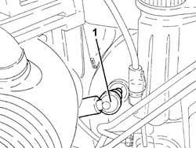
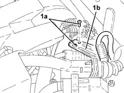
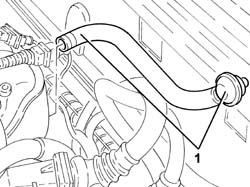
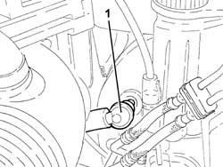
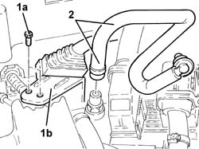
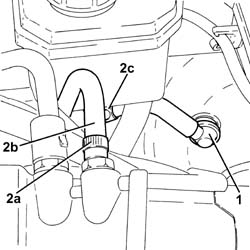
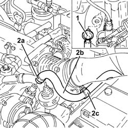
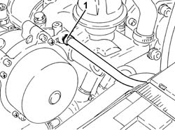
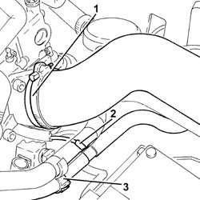
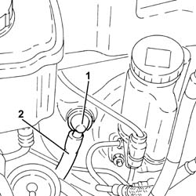

3330D26 Vacuum PIPE for brake servo assembly - R.R.
- Path
- Procedures > 33 BRAKING SYSTEM > 3330 HYDRAULIC BRAKING SYSTEM > 3330D brake vacuum system > 3330D26 Vacuum PIPE for brake servo assembly - R.R.
- Kind
- repair procedure (removal / refitting; the operation number is the code)
- Applies to
- all engines; all production periods
- Interactive page
- https://sloeber94.github.io/elrnDB-a147/en/#/3025238
Applies to: all engines; all production periods
Applies to: engines: 1.6 TS; all production periods
 Removing
Removing
 Refitting
Refitting1. Undo the bolts (1a) and remove the bracket (1b) after releasing it from the electrical wiring.

Applies to: engines: 1.6 TS; all production periods
1. Undo the bolts (1a) and remove the bracket (1b) after releasing it from the electrical wiring.

Applies to: engines: 1.6 TS; all production periods
1. Disconnect the vacuum pipe from the air chamber and remove it complete with brake servo single-acting valve.

Applies to: engines: 1.6 TS; all production periods
Refitting
RemovingPlace the vacuum pipe in its seating complete with brake servo single-acting valve.
Connect the vacuum pipe to the air chamber.
Place the bracket in its seating, fix it using the bolts, then secure the electrical wiring to it.
Connect the one-way valve to the brake servo.
Applies to: all engines; all production periods
Applies to: engines: 2.0 TS; all production periods
Removing
Refitting1. Disconnect the single-acting valve from the brake servo.

Applies to: engines: 2.0 TS; all production periods
1. Undo the bolts (1a) and remove the bracket (1b) after releasing it from the electrical wiring.
2. Disconnect the vacuum pipe from the air chamber and remove it complete with brake servo single-acting valve.

Applies to: engines: 2.0 TS; all production periods
Refitting
RemovingPlace the vacuum pipe in its seating complete with brake servo single-acting valve.
Connect the vacuum pipe to the air chamber.
Place the bracket in its seating, fix it using the bolts, then secure the electrical wiring to it.
Connect the one-way valve to the brake servo.
Applies to: all engines; all production periods
Applies to: engines: 3.2 V6; all production periods
Removing
Refitting1. Disconnect the single-acting valve from the brake servo.
2. Loosen the band (2a), disconnect the vacuum pipe (2b) from the air chamber, then remove it, complete with single-acting valve, after having released it from the band (2c).

Applies to: engines: 3.2 V6; all production periods
Refitting
RemovingPlace the vacuum pipe in its seating complete with brake servo single-acting valve and secure it using the band.
Connect the vacuum intake pipe to the air chamber and tighten the band.
Connect the one-way valve to the brake servo.
Applies to: engines: 1.9 JTD 8V; all production periods
Removing
Refitting.
1. Disconnect the single-acting valve from the brake servo.
2. Loosen the band (2a), disconnect the vacuum pipe (2b) from the vacuum unit, then remove it, complete with single-acting valve, after having released it from the band (2c).

Applies to: engines: 1.9 JTD 8V; all production periods
Refitting
RemovingPlace the vacuum pipe in its seating complete with brake servo single-acting valve and secure it using the band.
Connect the vacuum pipe to the vacuum unit and tighten the band.
Connect the one-way valve to the brake servo.
Applies to: engines: 1.9 JTD 16V; all production periods
Removing
RefittingProceed with removal 7025A12 Engine front sound insulation COVER - R.R. .
Proceed with removal 7025A14 Bonnet LID - R.R. .
Proceed with removal 1016A10 sound-proofing cover - r + r .
1. Loosen the band and disconnect the brake servo vacuum pipe from the vacuum unit.

Applies to: engines: 1.9 JTD 16V; all production periods
1. Loosen the band and disconnect the air intake hose from the connector on the throttle casing.
2. Disconnect the vacuum intake pipe for the vacuum reservoir from the T connector on the brake servo vacuum pipe.
3. Release the vacuum pipe for the brake servo from the retaining band.

Applies to: engines: 1.9 JTD 16V; all production periods
1. Disconnect the brake servo vacuum pipe complete with one-way valve from the brake servo.
2. Remove the brake servo vacuum pipe.

Applies to: engines: 1.9 JTD 16V; all production periods
Refitting
RemovingPlace the brake servo vacuum pipe back in its housing.
Connect the brake servo vacuum pipe to the brake servo one-way valve.
Secure the vacuum pipe for the brake servo to the securing band.
Connect the vacuum intake pipe for the vacuum reservoir to the T connector on the brake servo vacuum pipe.
Connect the air inlet hose to the connector on the throttle casing and tighten the band.
Connect the brake servo vacuum pipe to the vacuum unit and tighten the band.
Proceed with refitting 1016A10 sound-proofing cover - r + r .
Proceed with refitting 7025A14 Bonnet LID - R.R. .
Proceed with refitting 7025A12 Engine front sound insulation COVER - R.R. .
Topics linked from this page (3)
- 1016A10 sound-proofing cover - r + r
- 7025A12 Engine front sound insulation COVER - R.R.
- 7025A14 Bonnet LID - R.R.